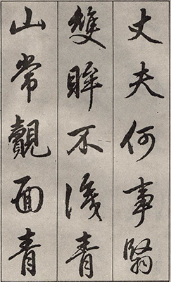
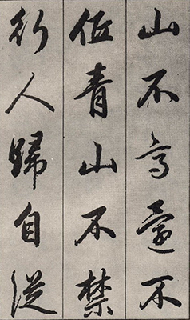

Running Script
Running script is a script between regular script and cursive script. Those who are close to regular script are called "Xingkai", and those who are close to cursive are called "Xing Cao".

History
Running Script(also called "semi-cursive script") developed in the Han. There is less constriction for calligrapher when writing in this script: strokes and, more rarely, characters are allowed to run into one another. Because calligraphers can use brush and write on paper instead of carving characters in stone or bone. Today, this is the most commonly used script in everyday life. There are countless examples of running scripts in the past. The most famous ones are Wang Xizhi, Wang Xianzhi, Li Yong, Yan Zhenqing, Yang Ningshi, Su Shi, Mi Fu, Huang Tingjian, Zhao Mengjia, Dong Qichang and so on.
